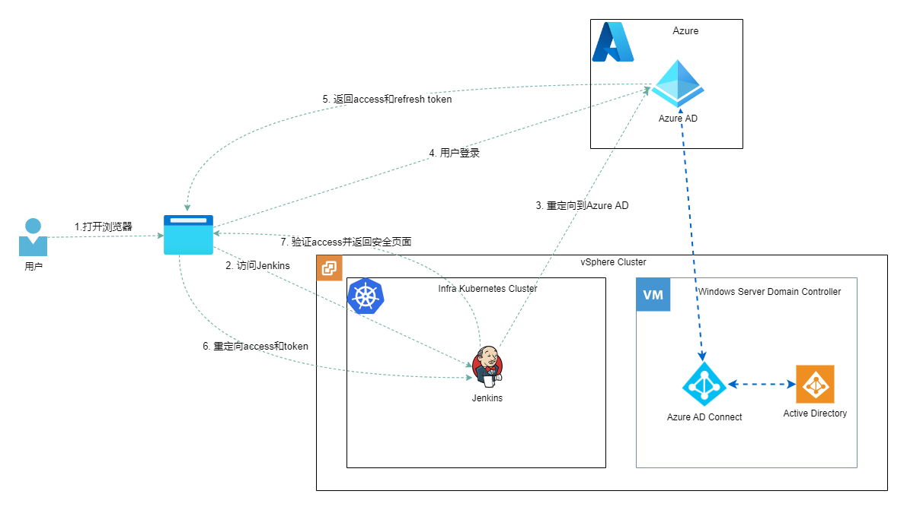

在我的Homelab中搭建了很多服务，比如NAS, Jenkins, Gitlab, SonarQube, Grafana等，如果每一个应用都使用独立的认证授权，我将面对如下问题：
- 需要设置多个密码。
- 如果设置定期更改策略，就意味着需要定期更改多个应用的用户密码。
- 当添加一个用户到我的homelab环境的时候，需要在多个应用中添加用户，过程比较繁琐。
- 当一个用户的角色发生改变时。需要在多个应用中进行更改。
我采用的解决方案是：Azure AD + Windows Server AD
Azure Active Directory
Azure Active Directory，简称Azure AD或者AAD，是一种基于云的标识和访问管理服务。 此服务可帮助员工访问外部资源，例如 Microsoft 365、Azure 门户和数以千计的其他 SaaS 应用程序。
功能
- Azure Active Directory Free。跨 Azure、Microsoft 365 和许多常用 SaaS 应用程序提供用户和组管理、本地目录同步、基本报告、云用户的自助密码更改以及单一登录。
- Azure Active Directory Premium P1。 除了免费版功能，P1 还允许混合用户访问本地资源和云资源。 它还支持高级管理，例如动态组、自助服务组管理、Microsoft Identity Manager 以及允许本地用户进行自助密码重置的云写回功能。
- Azure Active Directory Premium P2。 除了免费版和 P1 版功能，P2 还提供 Azure Active Directory 标识保护，可帮助对应用和重要的公司数据提供基于风险的条件访问，以及提供 Privileged Identity Management以便发现、限制和监视管理员及其对资源的访问，并在需要时提供实时访问。
该部分内容来自其技术文档，更多内容请访问什么是 Azure Active Directory？
如何获取
获取Azure Active Directory的方法有两种：
方法一：注册Azure账号即可使用Azure Active Directory Free版本。该方法是最简单，也是长期可用的。但是部分功能无法使用，比如使用本地写回进行自助式密码重置/更改/解锁。
方法二：通过Microsoft 365 Developer Program获取Azure AD Premium P2。该方式可以解锁所有Azure AD功能，但是通过该方式申请到Microsoft 365 E5订阅有效期只有120天，之后微软会根据规则决定是否自动续期。目前，可以在网上找到如何自动续期的方案。
Active Directory Domain Service
Active Directory 存储有关网络上对象的信息，并使管理员和用户可以轻松查找和使用这些信息。 Active Directory 使用结构化数据存储作为目录信息的逻辑分层组织的基础。
如何获取AD
获取AD有两种方式：
方法一，使用Azure Active Directory Domain Services。对于个人用户而言，价格有点高，比如在East Asia一个月至少需要109美元。其好处也是不言而喻的，可靠性是有保障的。
方法二，在本地Windows Server上安装AD。与我而言，我会选择这种方案，因为其成本相对而言会低很多，可靠性的优先级并不是很高。
Windows AD 和Azure AD之间的同步
Azure 提供了现成的工具，只需要在Windows Server上安装Azure AD Connect sync。详细内容可以参考：https://docs.microsoft.com/en-us/azure/active-directory/hybrid/how-to-connect-sync-whatis
如果AAD的license是P1或者P2，可以开启密码回写，这样就可以通过微软提供的服务进行密码修改。可以参考： https://docs.microsoft.com/en-us/azure/active-directory/hybrid/how-to-connect-password-hash-synchronization
如果只是free license，还想通过web页面修改密码，需要借助Remote Desktop Services来实现，可以参考：https://www.devopsage.com/how-to-setup-web-page-to-change-users-password/
如何管理用户和用户组
我采用的方案如下：
- 在Windows Server AD上维护用户组，之后用户组会自动同步到AAD上。
- 在Windows Server AD上维护用户，之后用户组会自动同步到AAD上。
- 根据使用场景创建用户组。以Jenkins为例，我将用户分为两类：Admin和User，Admin可以管理Jenkins的系统配置，User只能使用Jenkins，因此我会建立两个用户组：JenkinsAdmin 和 JenkinsUser。使用AAD实现SSO，最终根据用户组分配权限。
利用Azure AD实现应用SSO
Azure AD可以与很多种身份验证和同步协议集成。通过身份验证集成，只需对使用旧式身份验证方法的应用程序进行少量更改（或无需更改），即可使用 Azure AD 及其安全和管理功能。 利用同步集成，可以将用户和组数据同步到 Azure AD，然后使用用户 Azure AD 管理功能。 某些同步模式还支持自动预配。
支持的旧式身份验证方式：
- 基于标头的身份验证（Header-based authentication）
- LDAP身份验证（LDAP authentication）
- OAuth 2.0身份验证（OAuth 2.0 authentication）
- OIDC身份验证（OIDC authentication）
- 基于密码的SSO身份验证（Password based SSO authentication）
- RADIUS 身份验证（RADIUS authentication）
- 远程桌面网关服务（Remote Desktop Gateway services）
- Secure Shell (SSH)
- SAML 身份认证（SAML authentication）
- Windows身份认证（Windows Authentication - Kerberos Constrained Delegation）
支持的同步模式
- 目录同步：从本地 Active Directory 环境同步到 Azure AD
- LDAP同步
- SCIM同步
更多详细的内容可以看Azure Active Directory 身份验证和同步协议概述 - Microsoft Entra | Microsoft Docs，毕竟是官方文档。
总结
用一张图总结一下。在我的Homelab环境中，AD之间的同步，以及用户如何使用Azure AD登录到Jenkins上。
接下来我会分享几篇实践性的博客，讲讲Azure AD与Synology NAS, Jenkins, Gitlab等的集成。